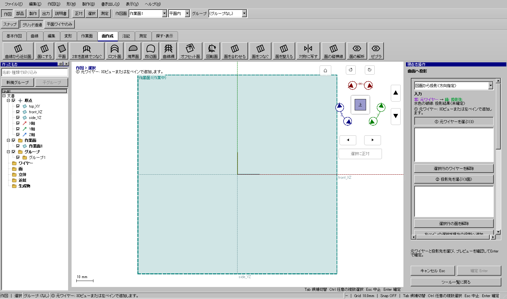
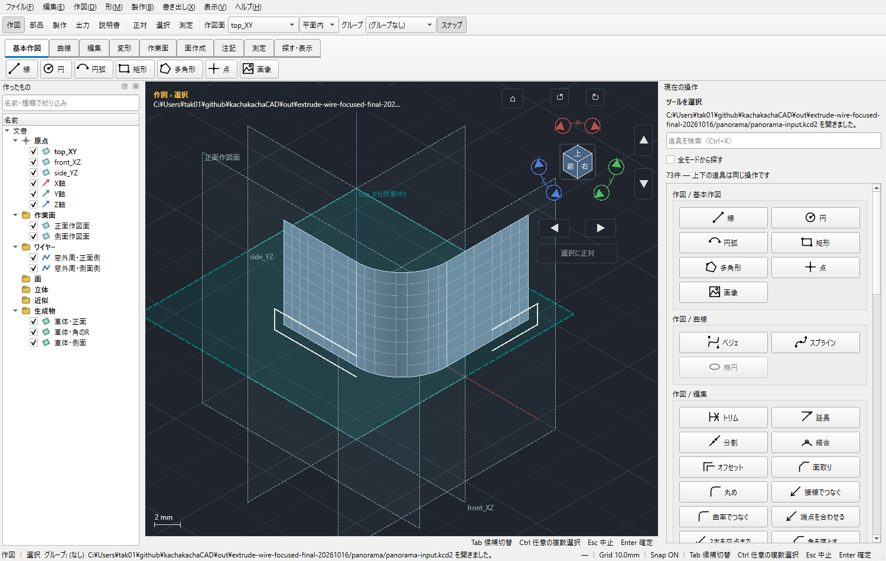
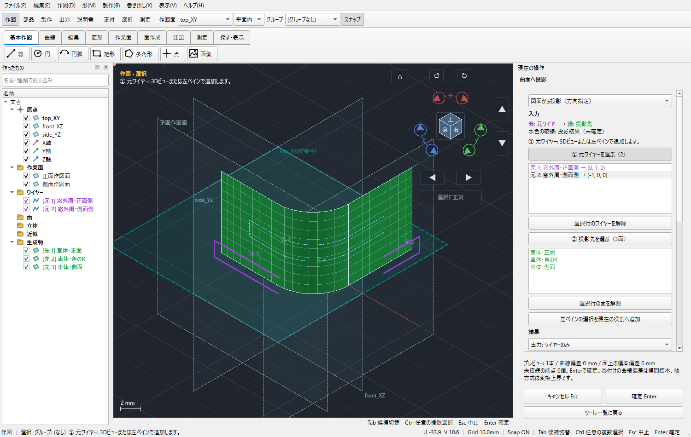
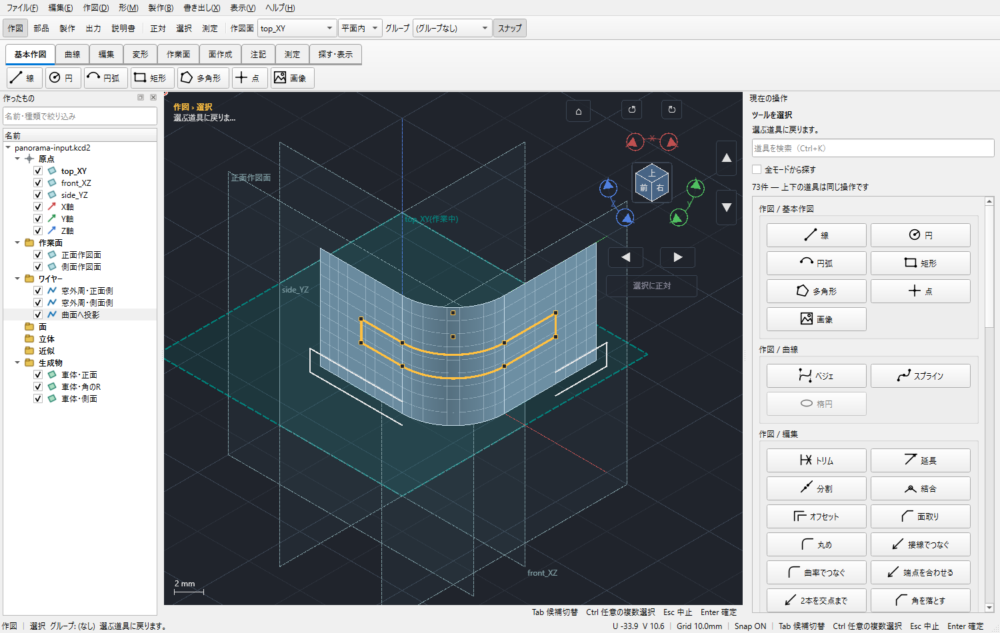
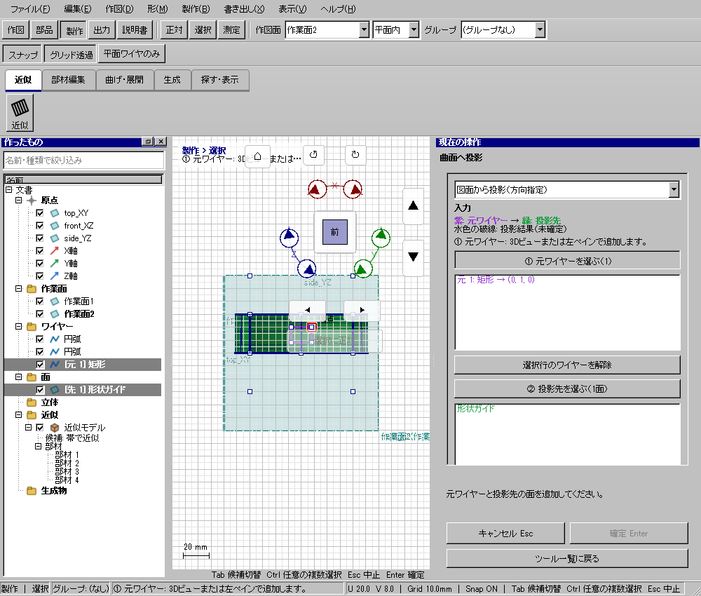

半径2mmのライトを車体の曲面へ投影する
使う機能：曲面へ投影
投影元の線と投影先の面を別の役割へ登録します。前面と側面の図面を同じ方向に落とすと回り込みが作れないため、方向は元ワイヤーの行ごとに指定できます。
曲面上の閉じた輪郭を作る。面の境界で分かれても接続を確認する。
1 準備 — 元の図形から作る
曲面と、その正面側に半径2mmの円を描く。
まだ用意できていなければ、次の手順を先に行ってください。既にモデルがある場合も、例の座標・大きさ・面の向きを自分のモデルへ読み替えます。
- 高さ違いの円2本から円筒状の面を作る — 図形の作成から順に練習できます。
- 指定座標の直線・円・円弧を準備する — 図形の作成から順に練習できます。
- 線・面・部品を取り違えずに選ぶ — 図形の作成から順に練習できます。
練習前にKCD2を別名保存します。数値の長さはmm、角度は度です。平面内のu/vと世界XYZを区別します。
2 使う道具を開く — 押す場所
- 作図 → 編集 → その他 → 面へ投影
別の入口：Ctrl+K → 曲面へ投影を検索 → 候補の用途を確認して開きます。別モードなら「全モードから探す」をオンにします。

3 操作手順 — 一つずつ進める
投影の準備を分ける
元図は投影する輪郭だけを描き、投影先は車体の面または部品の必要なフェイスを表示します。2方向の窓は下のパノラミック手順を使います。
画面で確認：元図の線と投影後の線を別に扱えるよう名前を付けます。

準備：正面と側面の別々の作図面。 画像を押すと原寸で開きます。 面へ投影を開始する
「作図 → 編集 → その他 → 面へ投影」を開きます。入口が見つからなければCtrl+Kで「面へ投影」を検索します。
画面で確認：右ペインに元ワイヤーと投影先の欄が出ます。
元図を登録する
「①元ワイヤーを選ぶ」を押して、左一覧か3Dで円・窓輪郭を追加します。不要な行は選んで解除します。
画面で確認：紫の「元」の表示と一覧の名前を照合します。
各図面の方向を決める
元ワイヤー一覧で正面側の行だけを選び、下の設定へスクロールして方向を指定します。側面側の行を選んで別方向を指定します。
画面で確認：行を選ばないと全入力へ方向が適用されることに注意します。
正面側の行だけに投影方向を設定。 画像を押すと原寸で開きます。 側面側の行だけに別方向を設定。 画像を押すと原寸で開きます。 投影先を登録する
「②投影先を選ぶ」を押して、届く先の面を追加します。正面・角R・側面にまたがるなら3面とも必要です。
画面で確認：緑の「先」が必要な範囲を覆います。元の線を先へ入れません。
出力形式を決める
線だけならワイヤーのみ、面も必要なら面＋ワイヤーにします。編集可能に残すなら通常ワイヤーを選びます。
画面で確認：通常ワイヤーも投影時点の形で独立し、元図変更による自動再投影ではありません。
プレビューする
プレビューを更新し、ライトなら全周、窓なら上下と側面の接続を拡大します。右ペイン下部の本数・開いた端点・偏差を読みます。
画面で確認：開いた端点を勝手に線でつなぐ機能ではありません。

下見：正面・角R・側面を回る輪郭。 画像を押すと原寸で開きます。 確定して使い分ける
Enterで確定します。通常ワイヤーは線として編集でき、投影面は通常押し出しなどの開始面へ指定できます。
画面で確認：面＋ワイヤーには各元図が閉じた平面輪郭であることが必要です。開いた2方向の外周から一括で窓面までは作れません。

確定した閉じた窓輪郭。 画像を押すと原寸で開きます。


4 設定する欄と数値
ボタン名・欄名と、今回使う値を対応させてください。項目が出ていない場合は作り方・モードが合っているか確認し、ペイン内をスクロールします。
| 見る欄・役割 | この例の設定と意味 |
|---|---|
| ①元ワイヤー | 円など |
| ②投影先 | 必要な全フェイス |
| 出力 | ワイヤーのみ／面＋ワイヤー |
| 残し方 | 通常／投影線分 |
選択の確認：役割欄の名前と3Dの強調を照合します。重なって拾いにくい時はTabで候補を替えます。全体を使う例では左一覧の要素名を選び、3Dの1辺選択と区別します。

この実画面は既存操作試験の一場面で、下の数値例の完成画像とは限りません。設定・選択の操作画面。具体的な完成例は段階写真のある作業例を参照してください。
5 確定して結果を確認
必要な入力と数値をそろえ、下見と状態欄を確認して、右ペインの作成・適用・確定ボタンを押します。Enter対応の道具はEnterでも確定できます。
曲面上の閉じた輪郭を作る。面の境界で分かれても接続を確認する。
形を作る操作では、元と結果の名前を分けて一覧で確認し、必要に応じて元を一時非表示にします。表示だけの機能では形状や要素数を変えることが目的ではありません。
6 取消・やり直し・保存
Escで未確定の入力を取り消します。道具を終えるには選択（V）か別の道具へ切り替えます。確定済みの図面変更はCtrl+Z、やり直しはCtrl+Yです。
モデルの編集正本はKCD2、説明書の編集正本はKCIです。外部へ出力するだけの機能では、出力ファイルと編集元を両方残してください。
進めない場合 — 症状から戻る場所を探す
| 起きていること | 確認して直す場所 |
|---|---|
| 円が欠ける | 投影方向、面の境界、必要フェイスと最大距離を確認 |
| 2方向を変えたら全部変わる | 一覧で目的の行だけ選んでから方向設定 |
この機能の入力条件：元ワイヤーと投影先の面を、道具を開始してから指定できます。
計算中は処理表示を見ます。失敗が出たら、対象・入力条件を変えずに何度も押すのでなく、案内にある対象と条件を確認します。
参考画面の出典と確認範囲
試験名：PROJ 曲面へ落とした窓が帯の型紙に開く。試験全体の結果：passed。画像はコマンド呼出し直後で、入力待ち・下見の場合もあります。各段階の完成証拠ではありません。